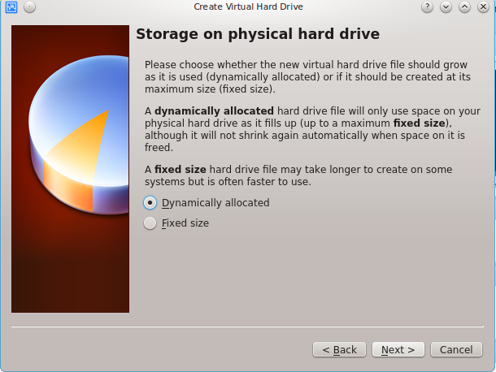

3. Installation
All required tools are available on OSGeo Live.
The following sections give a quick summary of how to setup OSGeo Live on your
computer.
Important
Before attending a workshop event, make sure your you can use
OSGeo Live with either method or
Install pgRouting on your computer.
3.1. OSGeo Live using a USB stick or DVD
Follow the instructions on OSGeo Live to prepare
your USB stick or bootable DVD.
- Insert the USB or DVD
- Restart your computer and wait for that first screen to pop up. Often, it will
say something like Press F12 to Choose Boot Device somewhere on the
screen. Press that key now.
- Give it a moment to continue booting, and you should see a menu pop up with a
list of choices on it. There highlight select DVD or USB drive and confirm
with
Enter.
- Exit the menu, the computer will restart using the selected device.
- Choose your preferred language and select .
More information on:
http://www.ubuntu.com/download/desktop/try-ubuntu-before-you-install
3.2. OSGeo Live on a virtualBox
First you need to install VirtualBox.
Go to https://sourceforge.net/projects/osgeo-live/files/10.0/ and download
osgeo-live-10.0-amd64.iso
Open VirtualBox and click
Fill name and operating system

Fill memory size

Fill hard drive

Fill hard drive file type

Fill Storage on physical hard drive

Fill File location and size

Click on

Confirm with

Add the osgeo-live-10.0-amd64.iso file

Now you have OSGeo Live configured to be used with VirtualBox

Double-click on OSGeo Live 10.
Choose your preferred language and click on Try Ubuntu.
Select to be
able to use the clipboard between your computer and the virtual machine.

{kind=link}